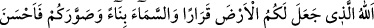
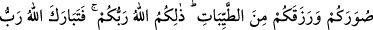
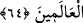
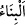
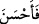

yaratılmıştır. Dolayısıyla, ömrü ve vakti müsâid ise isteklerinin zirvesine yükselmeye
ve istidâdlı olduğu şeylere ulaşmaya çalışması gereklidir. Ancak bu vazifesini ihmâl
eder ve tenbellik yaparak öylece ölürse, küçükken ölmüş bir çocuk gibi, kemâlât ve
saâdât mücevherlerinden yoksun olarak ölmüş olur. Yüce Allah’tan hepimizi bu uğurda
çalışıp gayret edenlerden eylemesini niyaz ediyoruz!
64. Yeri sizin için yerleşim alanı, göğü de bir bina kılan, size şekil verip de
şeklinizi güzel yapan ve sizi temiz besinlerle rızıklandıran Allah’tır. İşte Allah, sizin
Rabbinizdir. Âlemlerin Rabbi Allah, yücelerden yücedir.
“Yeri sizin” maslahat ve çıkarlarınız “için bir yerleşim alanı,” yâni karar kılınacak
ve üzerinde yalpalamadan durulabilecek bir yer “kılan…” Özellikle böyle açıklıyoruz,
çünkü Kamus’ta da belirtildiği üzere, “karâr” lafzı, yalpalamadan durabilme (sükûn ve
sebât) mânâsına geldiği gibi, yerde karar kılmış şey anlamına da, yerde tam olarak
yatışmış şey anlamına da gelebilmektedir. İbn Abbas (r. anhümâ) bu lafzın tefsirinde
şöyle der: Yeri, sizler hayatta iken de öldükten sonra da sizler için yaşama yeri kılan...
“Göğü de bir bina kılan...” “__WORD__ masdarı, “binâ edilmiş şey” anlamında olup
“üzerinizde ve sizden çok yüksekte olarak bina edilmiş bir kubbe” demektir. Nitekim
Arapların kurdukları “büyük çadırlar” için “binâ” denmesi de buradan gelmektedir.
Bunun sebebi, çıplak gözün gökyüzünü Arz’ın uzayın üzerine kurulmuş bir kubbe gibi
algılamasıdır.
et-Te’vîlâtü’n-Necmiyye’de der ki: Allah Teâlâ yeri aslında sadece sizler için, sizin
yaşama yeriniz olsun, diye yaratmıştır. Diğer varlıklar için ise yer, size bağlı olarak ve
sizin yüz suyunuz hürmetine var edilmiştir. Göğü de yine sizin için, özellikle sizin
çatınız olsun diye yaratmıştır. Diğer varlıklar ise burada size bağlı olarak
yaşamaktadırlar.
Bazılarına göre, Allah yeri dostları için, göğü de melekleri için yaratmıştır. Burada,
“Dostlarım, benim keskin kılıcım altındadır”[201] kudsî hadisine işaret vardır. Bunun
mânâsı: “Keskin kılıcımın hükümranlığı altında gizlenmişlerdir. Onların halleri Allah’ın
ma’rifet verdiği kimselerin dışındakiler açısından gizlidir” demektir.
Âyet-i kerîmede, Yüce Allah’ın zamanla ilgili lütfunun açıklanmasından sonra
mekânla ilgili lütfu da açıklanmıştır. “Size şekil verip de şeklinizi güzel yapan…”
ifadesinde ise, bizzat insanlarla ilgili lütfu açıklanmaktadır. “__WORD__deki “fâ”, tefsîr
fâsı’dır. Çünkü ihsân yâni şeklin güzel yapılması, şekil vermenin ta kendisidir. Tıpkı